Must-Do Experiences in Himachal Pradesh
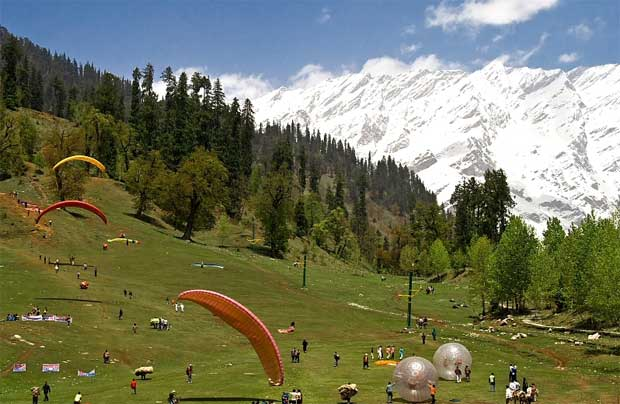
Solang Valley
Best Time to Visit: April to June
For further information, visit the site
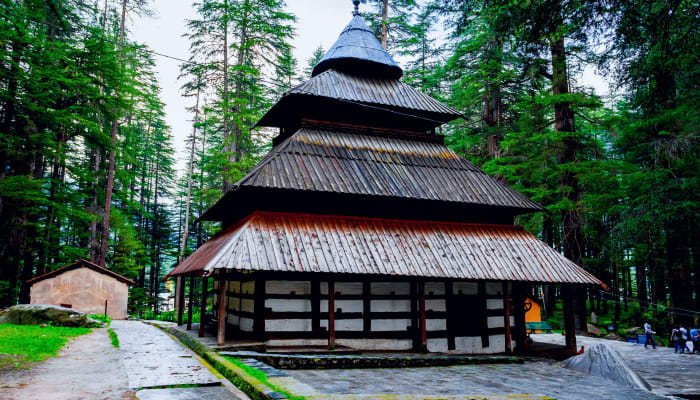
Hidamba Devi Temple
Best Time to Visit: April and June
For further information, visit the site
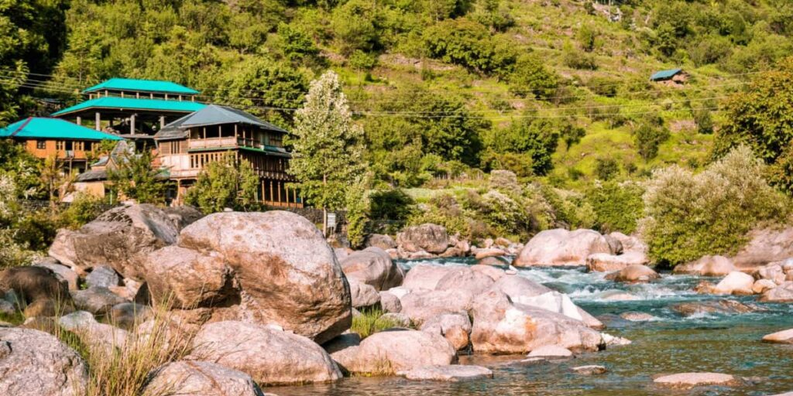
Tirthan Valley
Best Time to Visit: March to June, October to December
For further information, visit the site
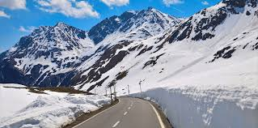
Rohtang Pass
Best Time to Visit: May to October
For further information, visit the site
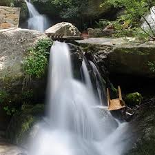
Jogini Waterfall
Best Time to Visit: March to June
For further information, visit the site
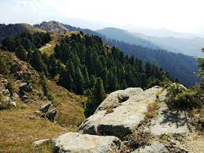
Dainkund Peak
Best Time to Visit: April to November
For further information, visit the site
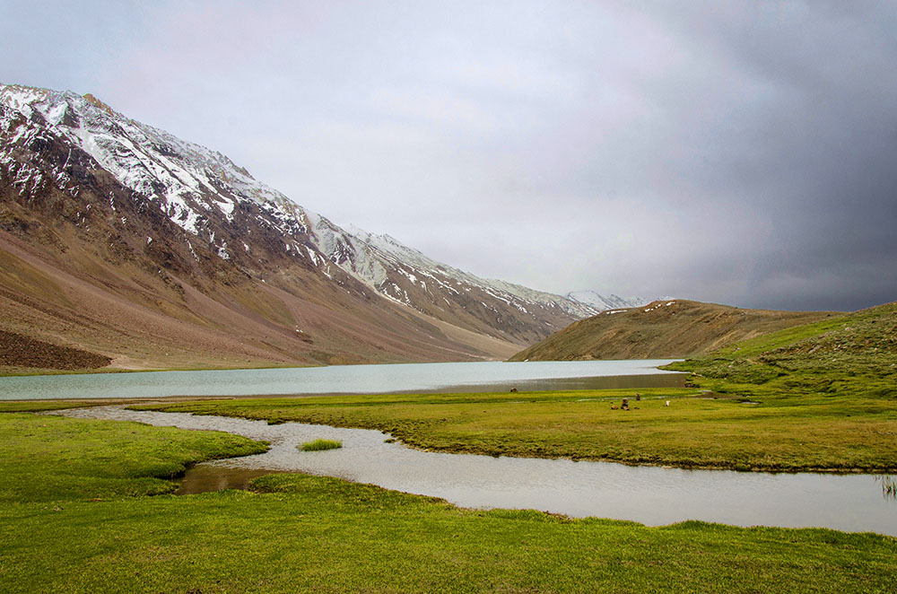
Spiti Valley
Best Time to Visit: June to October
For further information, visit the site

Beas River
Best Time to Visit: March to May or September to November
For further information, visit the site
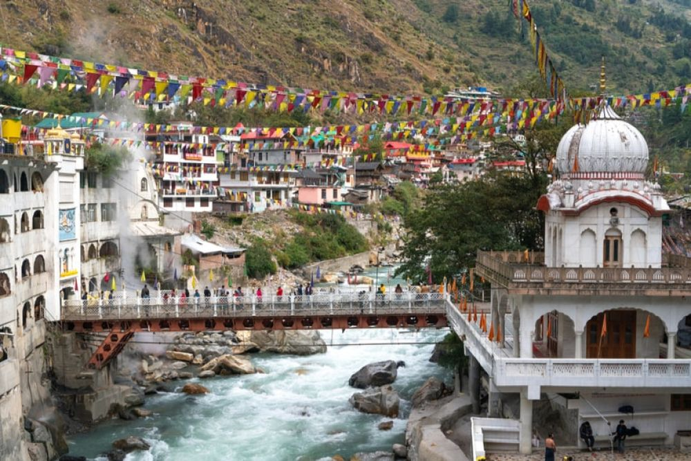
Manikaran Sahib
Best Time to Visit: October to May
For further information, visit the site
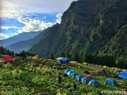
Kheerganga
Best Time to Visit: April to June, September to November
For further information, visit the site
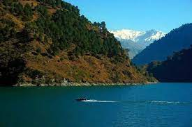
Chamera Lake
Best Time to Visit: March to June
For further information, visit the site
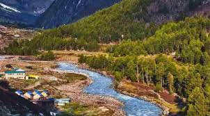
Chitkul
Best Time to Visit: May to June, September to October
For further information, visit the site